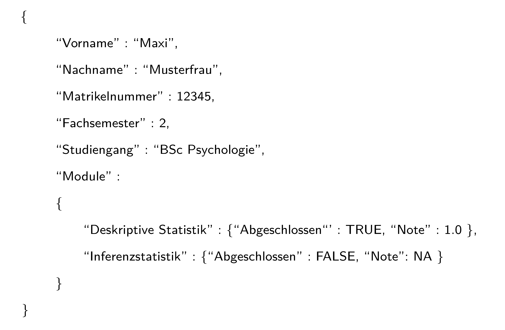
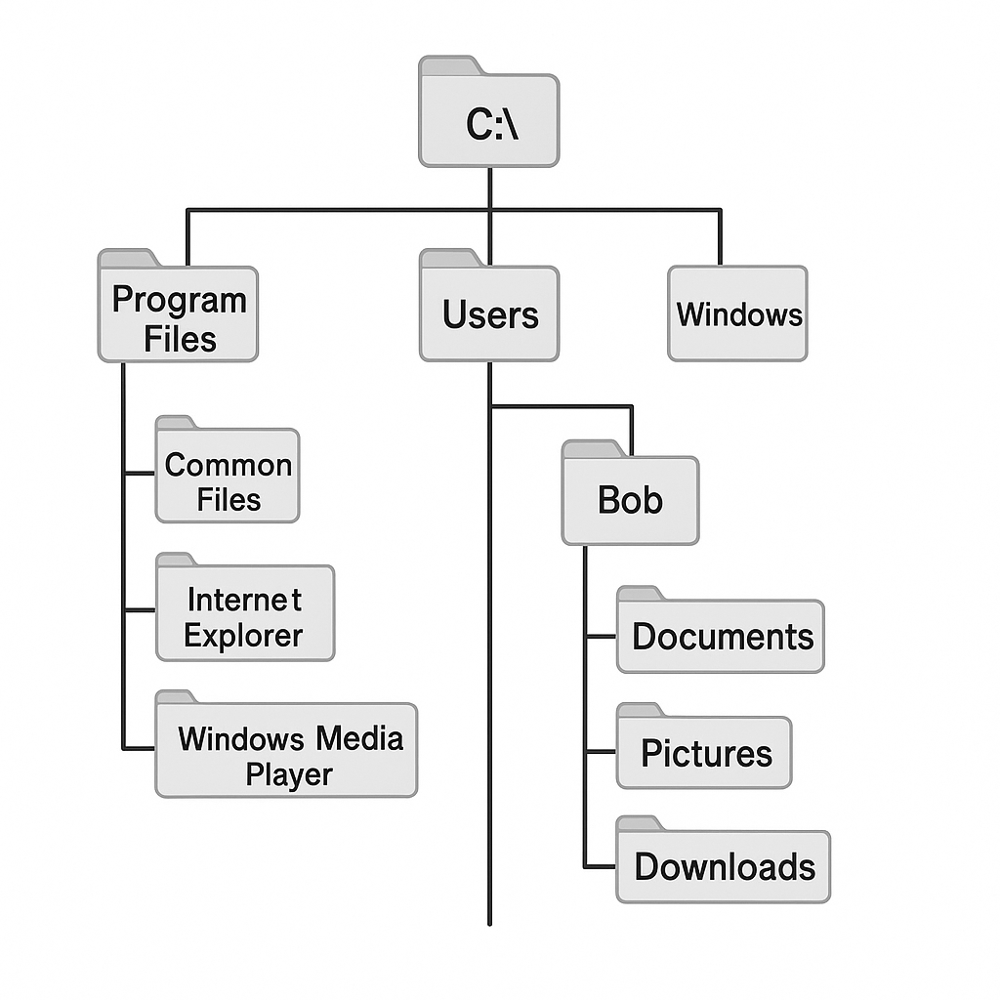

[1] "Dies ist ein character vector"[1] "Dies ist ein \"string\""In diesem Abschnitt wollen wir einige allgemeine Begrifflichkeiten zum Umgang mit Forschungsdaten einführen, gängige Formate zur längerfristigen Speicherung von Daten diskutieren und uns schließlich mit dem praktischen Einlesen und Speichern von Daten im Rahmen des R Verzeichnismanagements beschäftigen.
Das FAIR Datenideal ist ein Prinzip zum Management von Forschungsdaten, das der weiten Verbreitung, Nützlichkeit und Transparenz von Forschungsdaten im Digitalzeitalter Rechnung trägt. Unter Forschungsdaten werden dabei im Allgemeinen “elektronisch repräsentierte analoge oder digitale Daten, die im Zuge wissenschaftlicher Vorhaben entstehen oder genutzt werden, z. B. durch Beobachtungen, Experimente, Simulationsrechnungen, Erhebungen, Befragungen, Quellenforschungen, Aufzeichnungen von Audio- und Videosequenzen, Digitalisierung von Objekten, und Auswertungen.” (Rat für Informationsinfrastrukturen (2017)) verstanden. Konkret handelt es sich dabei etwa um Zahlenarrays oder Characterarrays, aber auch um Computersoftware wie R-Skripte, digitale Werkzeuge, Workflows und Analysepipelines.
Neben diesen, manchmal auch als Primärdaten bezeichneten Datenformen sind für das FAIR Datenideal sogenannte Metadaten von Bedeutung. Dabei handelt es sich um Daten, die Informationen über andere Daten repräsentieren. Man unterscheidet dabei beispielsweise deskriptive, strukturelle und administrative Metadaten (Riley (2017), Ulrich et al. (2022)).
Das FAIR-Ideal zum Forschungsdatenmanagement hat seinen Ursprung in Diskussionen im Rahmen der FORCE11-Konferenzserie und wurde 2016 durch Wilkinson et al. (2016) akademisch kommuniziert. Es besagt im Kern, dass Forschungsdaten Findable, Accessible, Interoperable, und Reusable für Menschen und Maschinen aufbereitet und vorgehalten werden sollen. Speziell formuliert das FAIR Datenideal folgende Ansprüche an das Management von Forschungs(meta)daten:
Findability (Auffindbarkeit)
Accessibility (Zugänglichkeit)
Interoperability (Interoperabilität)
Reusability (Wiederverwendbarkeit)
Der Anspruch an ein faires Forschungsdatenmanagement ist mittlerweile recht verbreitet, wobei die FAIR-Prinzipien mit mehr oder weniger bürokratischem Aufwand umgesetzt werden können. Es bleibt aber festzuhalten, dass zurzeit die FAIR-Prinzipien im Wesentlichen ein anzustrebendes Datenmanagementideal sind, und längst nicht alle Forschungsdaten FAIR verfügbar sind. Tatsächlich ist der Umgang mit digitalen Forschungsdaten auch weiterhin noch sehr unstrukturiert und gerade das deutsche Universitätssystem begreift das digitale Datenmanagement nur sehr langsam als eine Kernaufgabe. In größerem, wenn auch projektbasiertem und damit nicht nachhaltigem Rahmen versucht die Initiative zur Nationalen Forschungsdateninfrastruktur (NFDI), das deutsche digitale Forschungsdatenmanagement zu verbessern. Leider bleibt weiterhin festzuhalten, dass viele durch öffentliche Mittel finanzierte Wissenschaftler:innen von ihnen erhobene Forschungsdaten weder systematisch aufbereiten noch der Öffentlichkeit zur Verfügung stellen wollen. Hier ist also weiterhin auf einen Kulturwandel zu mehr wissenschaftlicher Transparenz zu hoffen und offene, öffentlich finanzierte Forschung (Open Research, vgl. z.B. Toelch & Ostwald (2018), Miedema (2022), Bertram et al. (2023)) bleibt ein anzustrebendes Ideal.
Allgemein definieren Dateiformate Syntax und Semantik von Daten innerhalb einer Datei. Dateiformate sind dabei bijektive Abbildungen von Information auf den binären Langzeitspeicher. Allgemein unterscheidet man Datendateiformate gegenüber Softwaredateiformaten, textuelle gegenüber binären Dateiformaten und offene gegenüber proprietären, d.h. urheberrechtlich geschützten, Dateiformaten. Bei binären Datendateiformaten ist das Einlesen von Daten, ihre Inspektion, und ihre Manipulation generell nur mit spezieller Software möglich. Beispiele für binäre Dateiformate sind .docx, .pdf, .xlsx, .jpg und .mp4 Dateien. Binäre Dateiformate sind dabei oft proprietär. Früher wurden binäre Dateiformate aufgrund ihres geringeren Speicherbedarfs auch für Forschungsdaten bevorzugt eingesetzt. Heutzutage werden dagegen textuelle Datendateiformate wie .txt, .csv, .tsv und .json favorisiert. Bei diesen Formaten ist das Einlesen der gespeicherten Daten, ihre Inspektion und ihre Manipulation mit einfachen allgemeinen Editoren wie beispielsweise VS Code problemlos möglich und die Dateiformate sind generell nicht proprietär. Abbildung 17.1 zeigt die Darstellung eines binären Datenformats und eines textuellen Datenformats im Windows Editor. Generell bieten sich im Forschungskontext und im Sinne der FAIR-Prinzipien also offene, textuelle Datendateiformate an. Exemplarisch wollen wir hier als textuelle Dateiformate das .csv-, das .tsv- sowie das .json-Dateiformat genauer betrachten.

.csv- (comma-separated values) und .tsv-Dateien (tab-separated values) sind wichtige Dateiformate zur Speicherung einfacher, tabellarisch strukturierter Daten. Allgemein repräsentieren .csv und .tsv zeilenweise miteinander verknüpfte Datensätze. Dabei werden Datenfelder innerhalb einer Zeile durch Kommata (.csv) oder Tabulatorzeichen (.tsv) und einzelne Datensätze durch Zeilenumbrüche voneinander abgegrenzt. Der Datensatz in der ersten Zeile einer .csv- oder .tsv-Datei enthält typischerweise die Definition der Spaltennamen und wird als Kopfdatensatz (Header) bezeichnet. Ein typisches Beispiel einer .csv-Datei ist in Abbildung 17.1 (rechts) dargestellt. Dabei repräsentieren die Zeilen experimentelle Einheiten (hier Versuchspersonen) und die Spalten verschiedene Variablen, für die jeweils ein Wert bei der Versuchsperson bestimmt wurde.
Im Kontext der Datenanalyse unterscheidet man bei .csv- und .tsv-Dateien eine Wide-Format- und eine Long-Format-Datenrepräsentation. Bei der Wide-Format- Datenrepräsentation werden alle Variablen einer experimentellen Einheit wie in obigem Beispiel in einer Zeile repräsentiert, vgl. Tabelle 17.1. Allerdings ist es für manche Datenanalysen hilfreicher, die Daten einer experimentellen Einheit über Zeilen zu verteilen. Dies führt auf das sogenannte Long Format, wie in Tabelle 17.2 gezeigt. Generell ist das Wide Format für ein erstes intuitives Verständnis eines Datensatzes oft hilfreicher, wohingegen das Long Format Daten im Rahmen modellbasierter Analysen meist konsistenter mit der Modellarchitektur repräsentiert.
| EE | V1 | V2 | V3 |
|---|---|---|---|
| 1 | 10.1 | 67.5 | 4 |
| 2 | 12.9 | 51.2 | 2 |
| 3 | 20.4 | 70.8 | 5 |
| 4 | 17.5 | 60.3 | 7 |
| Einheit | Variable | Messwert |
|---|---|---|
| 1 | V1 | 10.1 |
| 1 | V2 | 67.5 |
| 1 | V3 | 4 |
| 2 | V1 | 12.9 |
| 2 | V2 | 51.2 |
| 2 | V3 | 2 |
| 3 | V1 | 20.4 |
| 3 | V2 | 70.8 |
| 3 | V3 | 5 |
| 4 | V1 | 17.5 |
| 4 | V2 | 60.3 |
| 4 | V3 | 7 |
.json (JavaScript Object Notation) ist ein textuelles Datenformat, das zum Speichern strukturierter Daten in Key-Value-Form verwendet wird. Es weist Ähnlichkeiten mit R-Listen auf, insbesondere mit benannten Listenelementen, und eignet sich daher gut als Format für die Speicherung von Metadaten.
Eine .json-Datei besteht aus Objekten, die in geschweiften Klammern { } notiert werden und eine durch Kommata getrennte Liste von Eigenschaften enthalten. Jede Eigenschaft ist ein Key-Value-Paar, wobei der Key immer als String in Hochkommata (” “) geschrieben wird. Der Value kann wiederum ein Objekt, ein Array, ein String, ein Boolean oder eine Zahl sein. Abbildung Abbildung 17.2 zeigt den Inhalt einer .json-Datei zur Speicherung von Studierendeninformationen.

Da Verzeichnissysteme von Computern üblicherweise in Worten (z. B. C:\Users) statt numerisch dargestellt sind, ist eine Grundlage für das automatisierte Einlesen von langfristig gespeicherten Daten in den Arbeitsspeicher und umgekehrt des Speicherns von Daten aus dem Arbeitsspeicher im langfristigen Speicher das Arbeiten mit sogenannten Strings (Zeichenketten). Strings werden in R mit Anführungszeichen oder Hochkommata erzeugt:
[1] "Dies ist ein character vector"[1] "Dies ist ein \"string\""Die Funktion paste() konvertiert Vektoren in character und fügt sie elementweise zusammen.
[1] "1 2"[1] "Dies ist ein String"Die Funktion paste() hat darüber hinaus eine Reihe weiterer Funktionalitäten, die manchmal hilfreich sein können:
[1] "Rote Blume" "Gelbe Blume"[1] "Rote-Blume" "Gelbe-Blume"[1] "Rote Blume, Gelbe Blume"Die Funktion toString() ist eine paste() Variante für numerische Vektoren:
[1] "1, 2, 3, 4, 5, 6, 7, 8, 9, 10"[1] "1, 2, ...."Um nun die Daten einer Datei im Langzeitspeicher in den Arbeitsspeicher zu laden, benötigt man ihre Adresse in der Verzeichnisstruktur des Computers. Abbildung 17.3 zeigt einen Ausschnitt der Verzeichnisstruktur eines typischen Windows-Rechners.

Die Adressen von Dateien in der Verzeichnisstruktur heißen Dateipfade (paths). Ein Pfad besteht aus einer durch Schrägstriche getrennten Liste von Verzeichnisnamen. Dabei werden unter Windows traditionell linksgeneigte Schrägstriche (\, backslash) und unter Mac und Linux rechtsgeneigte Schrägstriche (/, slash) genutzt. Unter Windows findet sich zusätzlich in der Regel an oberster Stelle der Verzeichnisstruktur der Festplattenname (z.B. C:\ oder D:\), unter Mac der Benutzername (/Users/) und Linux das Heimverzeichnis (/home/). Die folgenden Beispiele sind Windows-basiert.
Absolute Dateipfade geben die Adresse eines Verzeichnisses oder einer Datei in der Gesamtverzeichnisstruktur der Festplatte und sind wenig anfällig für Dateiverwechselungen. Relative Dateipfade beziehen sich dagegen auf einen Speicherort in Relation zum aktuellen Verzeichnis, wobei . und .. das aktuelle und das übergeordnete Verzeichnis bezeichnen. Bei relativen Dateipfaden kann es durchaus zu Dateiverwechselungen kommen. Generell wird also die Verwendung adaptiv generierter absoluter Pfade empfohlen.
R besitzt ein sogenanntes working directory, aus dem per Default Dateien gelesen werden. Bei geöffnetem R-Terminal gibt getwd() das working directory an.
setwd() ändert das working directory. Dabei ist zu beachten, dass R nur mit forward slashes / arbeitet. Die manuelle Spezifikation von Windows-Pfaden benötigt deshalb doppelte backward slashes \\
Mithilfe der Funktion file.path() können betriebssystemkonforme Verzeichnis- und Dateipfade erzeugt werden:
Die Funktion dirname() gibt das Verzeichnis an, das ein Verzeichnis oder eine Datei enthält:
[1] "C:/Users/dirko/Nextcloud/Home/pdwp-online/dirk-ostwald.github.io/_part_2"[1] "C:/Users/dirko/Nextcloud/Home/pdwp-online/dirk-ostwald.github.io"Die Funktion basename() gibt die unterste Ebene eines Datei- oder Verzeichnispfades an:
Zum Einlesen von einfach strukturierten .csv-Dateien bietet sich die R-Funktion read.csv() an. Diese Funktion liest eine Datei ein und speichert ihre Inhalte in einem Dataframe.
Control drug1 drug2L drug2R delta1 delta2L delta2R
1 0.6 1.3 2.5 2.1 0.7 1.9 1.5
2 3.3 1.4 3.8 4.4 1.6 0.8 1.4
3 4.7 4.5 5.8 4.7 0.2 1.1 0.0
4 5.5 4.3 5.6 4.8 1.2 0.1 0.7
5 6.2 6.1 6.1 6.7 0.1 0.1 0.5
6 3.2 6.6 7.6 8.3 3.4 4.4 5.1
7 2.5 6.2 8.0 8.2 3.7 5.5 5.7
8 2.8 3.6 4.4 4.3 0.8 1.6 1.5
9 1.1 1.1 5.7 5.8 0.0 4.6 4.7
10 2.9 4.9 6.3 6.4 2.0 3.4 3.5Folgender R-Code definiert den absoluten Pfad der Datei adaptiv in der Verzeichnisstruktur des Computers mithilfe des R working directories.
wdir = getwd() # Working directory
print(wdir) # Ausgabe
ddir = file.path(wdir, "_part_2/_data") # Datenverzeichnispfad
print(ddir) # Ausgabe
fname = "cushny.csv" # (base) filename
print(fname) # Ausgabe
fpath = file.path(ddir, fname) # filepath
print(fpath) # Ausgabe
D = read.csv(fpath) # Einlesen der Datei
print(D) # Ausgabe des DataframesDarüber hinaus bietet R eine Vielzahl von Möglichkeiten des Datenimports mithilfe spezialisierter Funktionen:
Für .csv und andere Textdateien:
read.csv(), read.csv2(), read.delim(), read.delim2() als read.table() Varianten.readLines() für Low-Level-Textdateiimport.fromJSON() aus dem Paket rjson für .json-Dateien.Für binäre Dateien:
read.xlsx() und read.xlsx2() aus dem Paket xlsx für Excel-.xlsx-Dateien.read.spss() aus dem Paket foreign für SPSS-.sav-Dateien.readMat() aus dem Paket R.matlab für MATLAB-.mat-Dateien.Für Datenbanken:
DBI und RSQLite abgefragt werden.